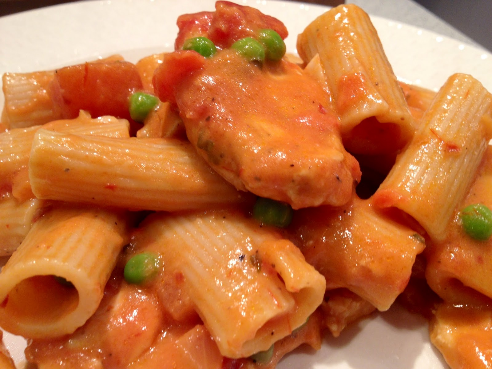

Spicy Chicken Rigatoni

Description
A popular dish in upstate New York, where my boyfriend is from. It's a
spicy chicken and tomato-based sauce ladled over fat rigatoni pasta. Not
for the meek who are afraid of heat!
Ingredients
- 1 (16 ounce) box rigatoni pasta
- 3 tablespoons butter
- 2 tablespoons olive oil
- 5 cloves garlic, minced, or more to taste
- 1 large shallot, chopped
-
3 boneless chicken thighs, cut into small pieces, or more to taste
- 5 fresh cherry peppers, thinly sliced, or more to taste
- 1 (16 ounce) can tomato sauce
- 1/4 cup dry sherry
- 1/2 cup whole milk
- 1 small bunch fresh basil leaves, torn
Steps
-
Bring a large pot of lightly salted water to a boil. Cook rigatoni in
the boiling water, stirring occasionally until tender yet firm to the
bite, about 13 minutes. Drain.
-
Heat butter and oil together in a large skillet over medium-high heat.
Add garlic and shallot to the skillet; cook and stir until fragrant and
shallots are translucent, 2 to 3 minutes. Add chicken; cook and stir
until it is no longer pink and the internal temperature reads at least
165 degrees F (74 degrees C), about 5 minutes.
-
Mix cherry peppers into chicken mixture; cook until soft, 5 to 7
minutes. Stir in tomato sauce; mix thoroughly. Lower heat to medium and
simmer, 7 to 10 minutes.
-
Pour sherry into tomato sauce mixture; simmer, stirring occasionally,
about 10 minutes. Pour in milk and simmer, about 5 minutes.
-
Remove from heat and mix in torn basil leaves. Spoon tomato sauce over
pasta to serve.